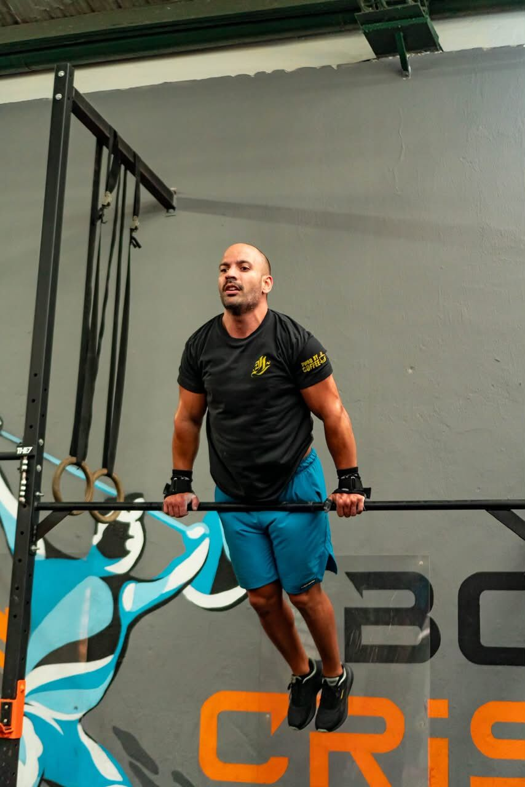
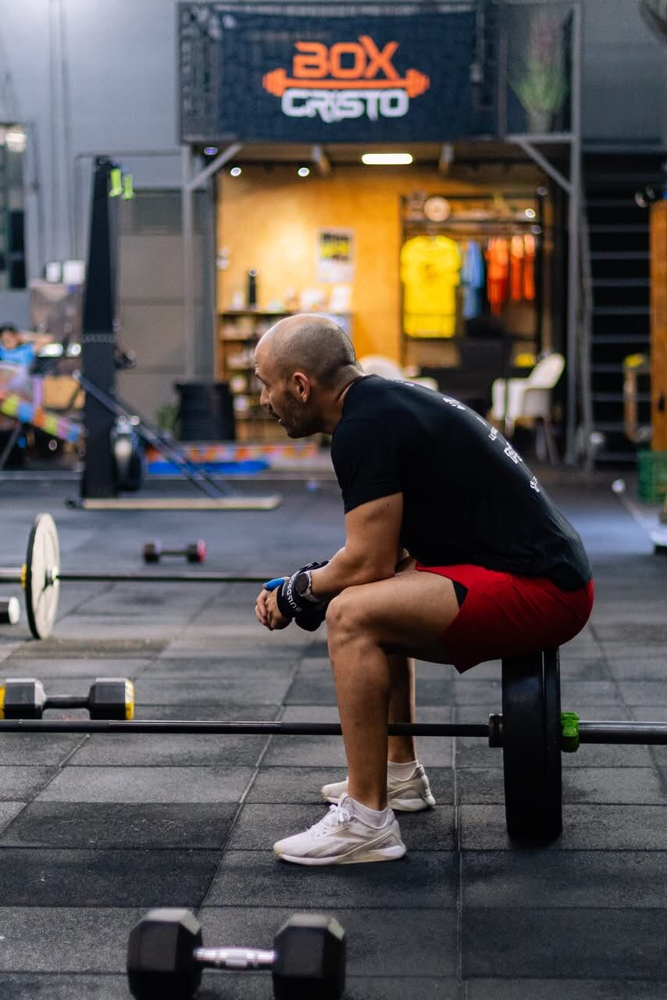
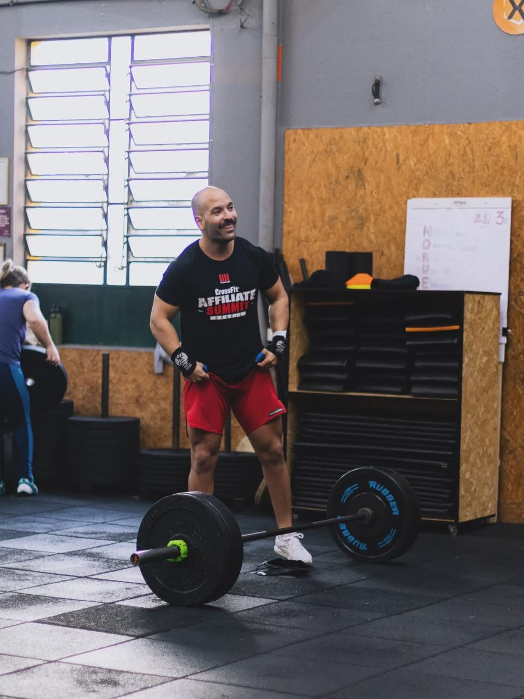
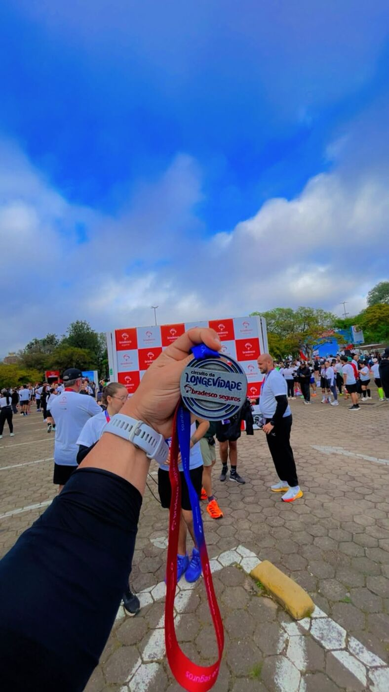

8 semanas de treino individualizado — técnica, cardio e força — construídas em cima do que você já é, não de um plano genérico de planilha.

Se você se reconhece em um destes perfis, o programa foi desenhado pensando exatamente em você.
Quer destravar o primeiro movimento com segurança, sem virar refém de vídeo de internet.
Já treina, mas sente que a técnica trava o progresso. O foco aqui é refinar, não recomeçar.
Precisa de periodização real para sustentar carga e volume sem estagnar.
Busca ganho mensurável de cardio e capacidade de trabalho, com teste no início e no fim.

Você vai encontrar ele na barra fixa do Box Cristo, numa ultrapassagem de ritmo na rua ou levantando a medalha depois de mais uma prova — o mesmo padrão que ele cobra em treino, ele aplica em si mesmo primeiro. O Desafio 60 Max nasce dessa lógica: técnica que sustenta carga, cardio que aguenta prova, e acompanhamento que não solta a mão do aluno em nenhuma das 8 semanas.


Avaliação de técnica e cardio antes do primeiro treino — o ponto de partida real, não um chute.
Cada bloco tem um objetivo específico: base, progressão de carga, intensidade e consolidação.
Ajuste de carga, técnica e ritmo toda semana — o programa muda com você, não o contrário.
Treine remoto ou presencial em Porto Alegre — o acompanhamento individual continua do mesmo jeito.
Padrão de movimento correto e uma linha de base de condicionamento antes de qualquer carga séria.
Aumento controlado de peso e trabalho total, sempre dentro do que a técnica sustenta.
Treinos mais exigentes, com foco em ritmo e capacidade de manter esforço sob fadiga.
Reteste de técnica e cardio para medir, em número, o que mudou desde a semana 1.
Ganho real de capacidade aeróbica, testado no início e no fim das 8 semanas.
Movimento corrigido desde a base, para treinar mais pesado sem virar refém de compensação.
Feedback semanal que ajusta o plano antes que a estagnação apareça.
Cheguei sem noção nenhuma de técnica e saí levantando carga que nem imaginava no diagnóstico.
O feedback semanal foi o que fez diferença — nunca treinei tão orientado antes.
Meu cardio no reteste da semana 8 foi visivelmente melhor que na semana 1. Comparável, não só sentido.
Depoimentos ilustrativos — substitua pelos relatos reais dos seus alunos antes de publicar.
Não. O programa recebe desde iniciantes que nunca levantaram peso até atletas de CrossFit e Hyrox — o diagnóstico inicial define o ponto de partida certo para cada caso.
Você recebe o plano de treino, envia vídeos e feedback semanal, e os ajustes de carga e técnica acontecem em cima disso — sem precisar estar presente fisicamente.
Porque o acompanhamento é individual — cada aluno recebe diagnóstico, ajustes semanais e atenção próprias. Isso só funciona com um número limitado de vagas por turma.
O programa tem 8 semanas com teste de técnica e cardio no início e no fim — o resultado é medido, não apenas sentido, ao longo desse período.
Fale agora com o Maximo e garanta sua vaga na próxima turma do Desafio 60 Max.
Quero minha vaga →